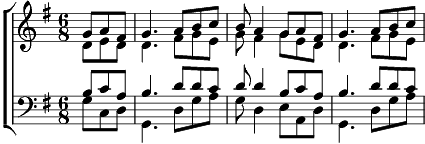

1. Pendant la Messe, les prières
Et puis après, un bon fricot !
Rien ne vous met le cœur à l'aise
Comme le goût d'un bon gigot !
2. Le samedi, de la bonn' viande,
Le vendredi, du bon poisson,
Et des bouteilles, le dimanche :
Voilà la vie des bons garçons !
3. Le bon fricot, ça met à l'aise,
Et le bon vin, ça met en train !
Allons, amis, la sauce est bonne !
N'hésitons pas, vidons les plats !
4. Et maintenant, donnez à boire,
Car de chanter met en sueur !
Allons, remplissez bien les verres,
Ça réjouira tous les chanteurs !